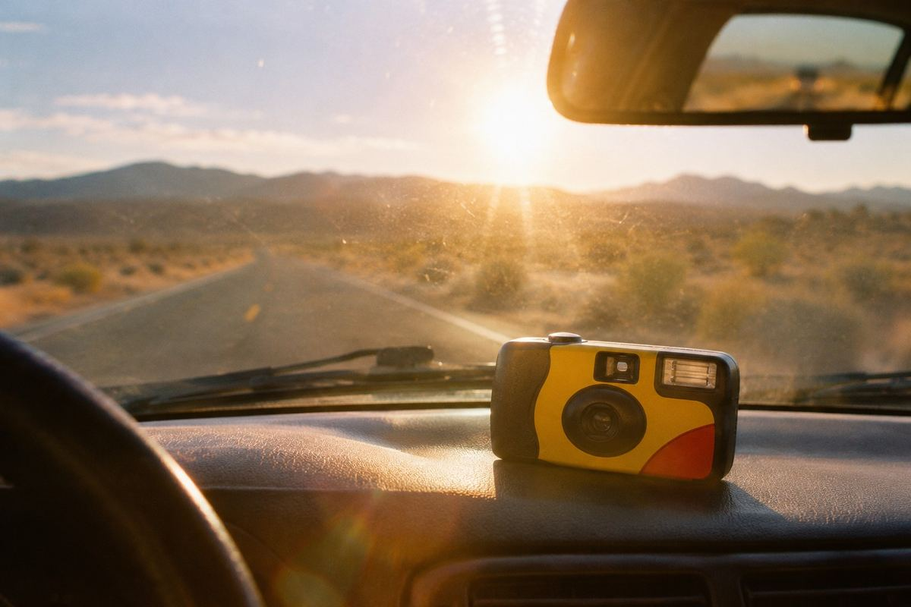
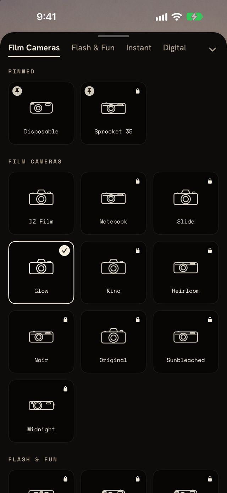
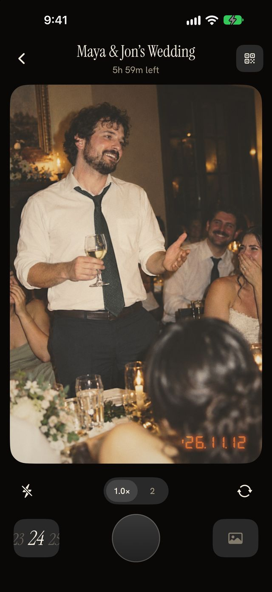

Disposable Camera Filter for iPhone: Get the Real Look
Real disposable specs, the date-stamp myth, a slider recipe and how to shoot like one.

Short answer: The best disposable camera filter for iPhone renders live, so you see the warm-green color, grain and soft, dark corners while you frame. You can also edit afterward: more contrast, darker shadows, warm and green color, grain and a vignette. Either way, shoot like a disposable: flash on, 3 to 10 feet away, no retakes.
The disposable look is easy to fake badly and surprisingly easy to fake well once you know where it comes from. This guide breaks down what a real single-use camera does to a photo, with the actual specs, then compares live filter apps with editing afterward, gives you a slider recipe, and covers the shooting habits that do most of the work.
What makes a photo look like it came from a disposable camera?
A single-use camera is a box of compromises, and every compromise shows up in the picture. Fujifilm’s product bulletin for the QuickSnap Flash 400 lists a plastic 32mm f/10 “focus-free” lens that’s sharp from about 3.3 feet (1 m), ISO 400 film, 27 exposures, a separate little viewfinder and a flash rated for 3.3 to 10 feet. Kodak lists its Fun Saver with 800-speed film, 27 exposures and a flash range of 4 to 11.5 feet, which you charge before every picture.
Put those numbers together and you get the look:
| What you see | Where it comes from | How to get it on iPhone |
|---|---|---|
| Bright faces, black background | A small flash that only reaches about 10 feet | Flash on, subject 3 to 10 feet away, dark room |
| Soft edges, darker corners | A simple plastic lens | Strong vignette, no sharpening |
| Visible grain | Fast ISO 400 to 800 consumer film | Medium grain, stronger than a general film edit |
| Warm, slightly green color | Consumer film and quick lab scans | Warmth up, Tint toward green |
| Punchy contrast | Direct flash on fast film | Contrast up, shadows down |
| Everything in focus | A wide f/10 lens with fixed focus | Skip Portrait mode and fake background blur |
| Loose, slightly off framing | A separate viewfinder, offset from the lens | Frame fast; don’t straighten every horizon |
| The odd light leak | Stray light in a cheap plastic body | One leak per set at most, at an edge |
The other ingredient is scarcity. Twenty-seven frames and no screen meant people shot the moment once and moved on, which is a big part of why these photos feel candid. For the backstory, see a short history of the disposable camera.

Do disposable cameras have a date stamp?
Not the classic ones. Neither Kodak’s nor Fujifilm’s spec list above mentions a date imprint. The red-orange date in the corner of old prints came mostly from cheap 35mm compact cameras, which projected the date onto the film through a tiny LCD lit by a small bulb, as this Hackaday write-up of a teardown explains.
So a date stamp on a “disposable” photo mixes two different cameras. That doesn’t make it wrong; it makes it a style choice. Use it when you want a set to feel like a 1990s family album, and skip it when you want the purest disposable look. If you do use one, keep the real date. A stamp from a random year is the first thing that reads as fake.
Disposable camera filter apps for iPhone vs editing afterward
There are four ways to get the disposable effect on an iPhone, and they differ mostly in when you see the photo and how much you can change it.
| Approach | When you see the photo | Control | Best for |
|---|---|---|---|
| Live filter camera app | Right away, already in the look | Medium | Everyday snaps, nights out |
| Editing afterward | Right away; the look comes later | High | Old photos, a few keepers |
| Develop-later app | After a set wait | Low | Solo shooters who want the suspense |
| Shared event camera | At a reveal time the host picks | Low to medium | Parties, trips, weddings |
Live apps help most with framing. When the viewfinder already shows the finished look, you shoot for it, step closer and stop wasting frames on scenes it can’t flatter. Editing wins for control and for photos you’ve already taken, but it can’t invent a flash that never fired.
Develop-later apps bring back the wait. Dispo, for example, says in its App Store listing that photos develop every day at 9 a.m. (as of November 2026). Shared event cameras apply the same idea to a group: everyone shoots into one roll and it develops for everyone at once. If you’re weighing these against cheap screenless gadgets, our explainer on what a digital disposable camera is compares all three.
How to get the disposable look with Filmsera
Filmsera is our app, so here’s plainly what it does. Its Disposable camera is one of the five free cameras on the vintage film camera shelf, and it renders live in the viewfinder, so you see the look before you shoot. You can switch on an optional date stamp, and holding the shutter records a clip of up to 15 seconds through the same look. The Disposable look page has sample photos.
For the full wait-to-develop experience, make it a shared film:
- Create a film, name it, and pick when it develops. Tonight, Tomorrow and In 3 days all develop at 9 p.m.; pick Custom for any other time, such as the next morning.
- Choose Disposable. One look is locked for the whole roll, so every photo matches.
- Share the QR code, invite link or 8-character code. Friends join in the free iPhone app or in any phone’s browser with no app or account (browser guests take photos only).
- Everyone shoots. Quick setup gives each person 12 shots by default, up to 24 on a free film, and nobody can peek, including you.
- At the reveal time the whole roll appears at once for everyone in the film, each photo tagged with who took it.
At the time of writing, hosting a film for up to 10 people is free; bigger groups need a one-time pass for that film. On a free film, photos stay on Filmsera’s servers for 30 days after the reveal, so save the ones you love to your phone. The host needs an iPhone. If you’re planning a whole night around it, our disposable camera party playbook covers the format.


Filmsera’s Disposable camera is free and renders its look live in the viewfinder, so you see the shot before you take it. Get Filmsera on the App Store
Disposable camera effect: an editing recipe for any iPhone photo
This works best on a photo taken with the flash on. In Photos, tap Edit, then Adjust, and use these as starting points:
- Brilliance −10 to −20. Removes the iPhone’s flattened, everything-visible look.
- Contrast +15 to +25. Flash on fast film is punchy.
- Shadows −20 to −35. Sinks the background the way a flash that ran out of reach would.
- Black Point −5 to −10. Drugstore scans rarely had inky blacks; a slight negative value keeps them murky rather than pure black.
- Saturation +5 to +15. Consumer film was cheerful.
- Warmth +10 to +25 and Tint −10 to −20. Warm with a green lean. Push Tint further for a fluorescent-lit room, less for daylight.
- Vignette +25 to +40. Stronger than a general film edit, because plastic lenses darken the corners.
- Sharpness and Definition at 0. A phone is already far sharper than a plastic lens.
Photos has no grain slider, so finish in a free editor such as Snapseed, which has a Grain tool. Go a little stronger than you would for a fine-grain film look, roughly 25 to 35 if the slider runs to 100, because fast drugstore film was grainy. Add a light leak only if your app has a convincing one, and only on one or two photos per set. For a gentler, all-purpose film recipe, see how to make photos look like film on iPhone.
Why editing can’t fully fake the flash
The heart of the disposable look happens at the moment of capture: a burst of light that hits the nearest faces hard, throws a sharp shadow on the wall behind them, and never reaches the back of the room. You can darken a background in an edit, but you can’t add that hard-edged shadow or the bright, slightly shiny skin. If you want photos that look like a real disposable, turn the flash on before you take them.
How to shoot like a disposable camera on iPhone
- Force the flash on. Your iPhone fires the flash only when it decides you need it. Tap the Flash control above the frame and choose On, as described in Apple’s camera tools guide. Turning the flash on also switches Night mode off, which is what you want here.
- Use it in daylight too. Direct flash on a sunny afternoon gives the flat, bright faces of a classic beach snapshot.
- Stand 3 to 10 feet away. That’s roughly the range real disposable flashes were rated for. Closer than that, a real disposable went soft and blown out; farther, faces faded into the dark.
- Stay at 1x. Disposables had one fixed lens. Your 1x camera is a little wider, so take half a step closer instead of zooming.
- Give yourself a roll. Decide on 27 shots for the night, no retakes and no deleting. It changes what you choose to shoot.
- Photograph people, not views. A disposable flash can’t light a skyline, and the look falls flat on empty scenery.
- Pocket the phone between shots. Checking every frame breaks the spell, and the moment.
Mistakes that make a disposable filter look fake
- A date stamp from the wrong year, or on every single photo.
- Light leaks everywhere. Real cameras leaked occasionally and at the edges.
- Portrait mode blur. An f/10 fixed-focus lens kept nearly everything sharp, so a melted background gives the game away.
- No flash at night. A dim, noisy, filtered photo looks like a filtered phone photo.
- Pushing orange too far. Warm and a little green, not sunburnt.
- Over-editing the framing. Perfectly straight, perfectly centered crops look composed. Disposable photos look caught.
FAQ
What is the best disposable camera filter app for iPhone?
Look for one that renders the look live in the viewfinder, so you can frame for it. Filmsera’s Disposable camera does that and is one of its five free cameras. If you want the wait to develop on your own, Dispo says its photos develop daily at 9 a.m. If you’d rather edit photos you already have, Snapseed is free and adds the grain that the Photos app can’t.
How do I get the disposable camera effect without an app?
Shoot with the flash set to On from 3 to 10 feet away, then edit in Photos: lower Brilliance, raise Contrast, drop Shadows, lift Black Point slightly below zero, add Warmth, pull Tint toward green and add a strong Vignette. The one thing Photos can’t do on most iPhones is grain, so a free editor helps for the final step.
Do disposable cameras have date stamps?
The classic Kodak and Fujifilm single-use cameras don’t list a date imprint in their specs. The red-orange date in old photos came mostly from cheap 35mm compact cameras that projected the date onto the film. Adding one to a disposable-style photo is a style choice; if you do, keep the real date so it doesn’t look fake.
How many photos does a disposable camera take?
The standard Kodak Fun Saver and Fujifilm QuickSnap Flash 400 hold 27 exposures each. That number is a useful rule for a disposable-style night on your phone: give yourself 27 shots, don’t retake, and don’t delete. The limit makes you wait for better moments, which is a big part of why the photos feel candid.
Why do disposable camera photos have dark backgrounds?
Their flashes are small. Fujifilm rates the QuickSnap’s flash for about 3 to 10 feet, so people up close get blasted with light while anything farther away gets almost none and falls to black. To copy it on an iPhone, set the flash to On, stand within that range, and shoot in a dim room rather than a bright one.
Written by the Filmsera team
Filmsera is a shared disposable camera app for iPhone: create a film for your event, let guests join by QR code from the app or their phone's browser, and open the whole roll together at the reveal. Download on the App Store →
Photos in this article are illustrations created for Filmsera, not customer photos. App screenshots are from Filmsera on iPhone.